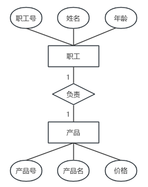
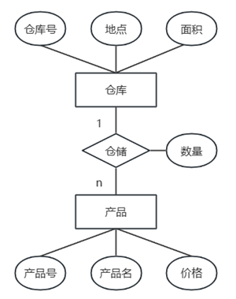
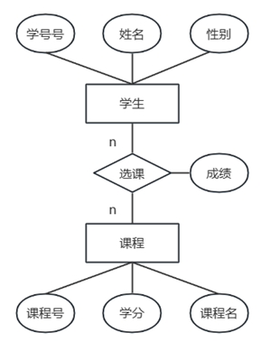

- 实体 Entity
- . 用矩形表示；使用名词
- . 区别与其他对象的事物或事件
- . 题干中通常按照主要关系进行描述，如：分公司关系、部门关系、员工关系
- . 关系的描述使用菱形，从题干中找关键字写入，并标注关系两侧实体的对应关系
- . 主外键识别：通常以XX号表示。如部门号、主管号、分公司编号
- 属性
- . 实体某方面的属性；用椭圆表示，使用名词；用无向边与其实体集相连
- . 简单属性|原子属性、复合属性
- . 单值属性、多值属性、NULL属性
- . 派生属性：由一个属性可以派生出当前属性，如出生日期和年龄都是实体属性，则年龄是派生属性
- 联系 Relationships
- . 实体间的联系；用菱形表示，使用动词
- . 联系以适当的含义命名，名字写在菱形框中，用无向连线将参加联系的实体矩形框分别与菱形框相连，并在连线上标明联系的类型
-
关系分类 类型 示例 1：1 班长 1——任职——1 班级 1：n 老师1——讲授——n课程 m：n 学员n——选修——n课程
E-R转换关系模式
- . 问题：如何将实体与实体之间的联系转换为关系模式?
- 1. 实体E要转换为关系模式
- 2. 实体间的联系R也要转换为关系模式
- . 重点：确定关系模式的属性和主码
- 1:1
- . 可以分别单独转换为一个关系，也可以讲联系并入任何一端
-
独立关系
. 实体A → 1个关系
. 实体B → 1个关系
. 联系R → 1个关系：与该联系相连的各实体的主码以及联系本身的属性均转换为关系的属性，且每个实体的主码均是该关系的候选码
归并关系 - 联系可以归并到任一端. 在被合并关系中增加新属性：联系本身的属性和与联系相关的另一个实体集的主码
-
 1:1 - 1:1关系转化
- 1. 独立关系
- 职工（职工号，姓名，年龄）
- 产品（产品号，产品名，价格）
- 负责（职工号，产品号）；产品号也可以作为主码
- 2. 归并关系
- 2.1. 联系归并到职工；"负责"这个联系没有属性，需要把关联的另一个实体码加进来
- 职工（职工号，姓名，年龄，产品号）；产品号作为外码
- 产品（产品号，产品名，价格）
- 2.2. 联系归并到产品；"负责"这个联系没有属性，需要把关联的另一个实体码加进来
- 职工（职工号，姓名，年龄）
- 产品（产品号，产品名，价格，职工号）；职工号作为外码
- 1:n
- . 可以分别单独转换为一个关系，也可以讲联系并入多端
-
独立关系
. 实体A → 1个关系
. 实体B → 1个关系
. 联系R → 1个关系：同1:1
归并关系 - 联系归并到多端. 在n端实体集中增加新属性：由联系对应的1端实体集的主码和联系自身的属性构成
-
 1:n - 1:n关系转化
- 1. 独立关系
- 仓库（仓库号，地点，面积）
- 产品（产品号，产品名，价格）
- 仓储（仓库号，产品号，数量）；产品号也可以作为主码；联系"仓储"有一个属性"数量"
- 2. 归并关系-归并到n端
- 仓库（仓库号，地点，面积）
- 产品（产品号，产品名，价格，仓库号，数量）；仓库号作为外码
- m:n
- . 不能归并；都是n端，那归并到哪个呢？所以干脆都不归并，自己独立
- . 只能单独转换为一个关系
- . 新关系的属性：与该联系相连的各实体集的主码以及联系本身的属性
- . 新关系的码：两个相连实体码的组合（该码为多属性构成的组合码）
- . 实体A → 1个关系
- . 实体B → 1个关系
- . 联系R → 1个关系
-
 m:n - m:n关系转化
- 学生（学生号，姓名，性别）；不变
- 课程（课程号，学分，课程名）；不变
- 选课（学生号，课程号，成绩）；主码是组合；联系"选课"有一个属性"成绩"
- E-R模型向关系模型转换时，两个实体E1、E2之间的多对多联系R应该转换为一个独立的关系模式，且该关系模式的关键字由（）组成。
-
E1和E2的关键字加上R的属性E1和E2的关键字E1或E2的关键字联系R的属性
- 【分析】问的是关键字不是属性，是B，不要选A